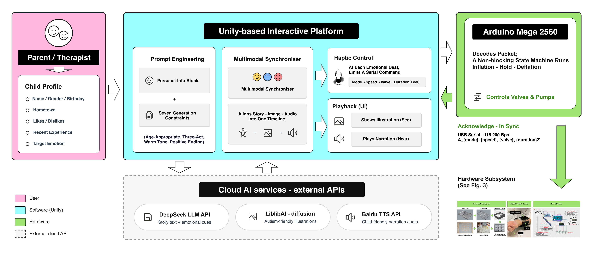
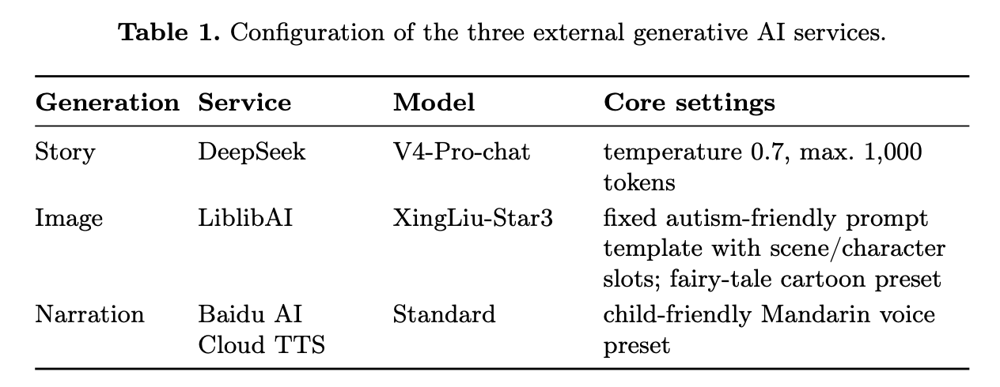
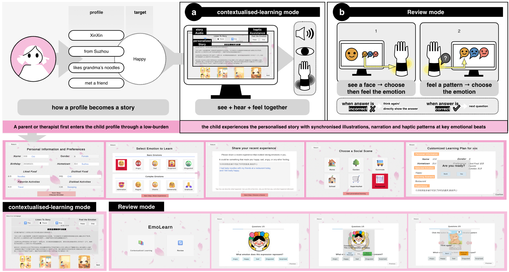
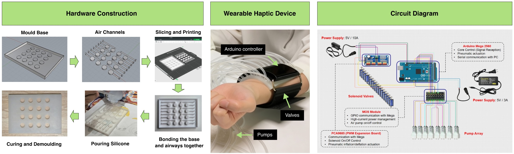
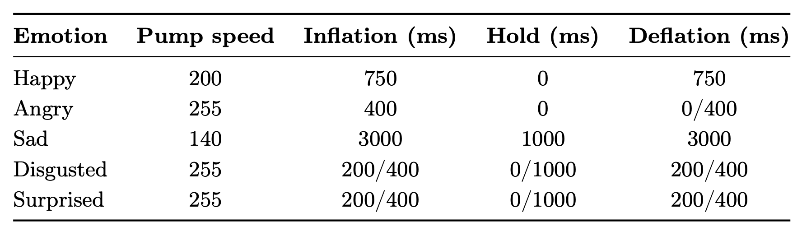
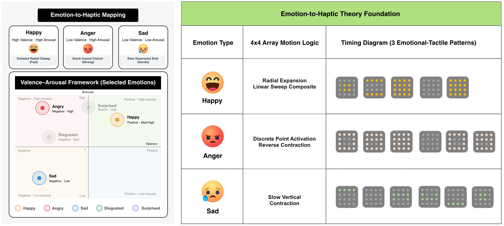
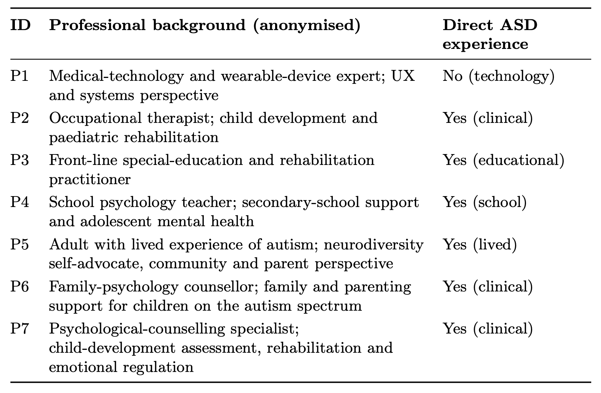

Feeling the Story: Designing AI-Personalised Haptic Storytelling for Emotional Learning in Children with Autism Spectrum Disorder
Xinling Yao1, Jiaqun Liu2, Wen Luo2, Min Chen1, and Martijn ten Bhömer2
1 Xi’an Jiaotong-Liverpool University, Suzhou, China · 2 University of Macau, Macau SAR, China · mtenbhomer@um.edu.mo
Abstract
Children with Level 1 autism spectrum disorder often find it hard to recognise and express emotions, and conventional interventions are therapist-intensive and weakly personalised. Pairing personalised storytelling with synchronised, emotion-specific affective haptics is largely unexplored, yet evidence that touch can convey distinct emotions, with advances in AI-personalised narrative, makes it a promising space for design research. We present EmoLearn, a design study combining AI-personalised storytelling with synchronised pneumatic forearm haptics, rendering a target emotion as a distinct touch pattern so that a child can see, hear and feel it together. Before any use with children, we conducted a reflexive thematic analysis of interviews with seven multidisciplinary experts spanning autism intervention, clinical practice, psychology and special education. We constructed five themes, spanning the shift from recognising emotions to regulating them, personalisation as a safety requirement, the touch–emotion mapping and guarding against sensory overload, the family ecosystem, and a path to testing. From these we distil five transferable design learnings (DL1–DL5), contributing a multimodal affective-haptic design and a design-oriented agenda for pervasive emotional-learning technology.
Keywords: Affective haptics · Autism spectrum disorder · Emotional learning · Generative AI · Reflexive thematic analysis · Pervasive health · Design study.
1 Introduction
Autism, or autism spectrum disorder (ASD), is a common neurodevelopmental condition [27]. Children with Level 1 ASD (“requiring support”) [1] typically communicate verbally and attend mainstream or inclusive educational settings, yet many find it hard to recognise others’ emotions and to express their own [22, 25]. These difficulties constrain everyday social interaction and can compound into anxiety and isolation. Conventional interventions that foster emotional and social understanding are effective but depend heavily on trained adults, are weakly personalised to the individual child, and convey emotion through language and pictures alone. In this paper we use person-first language (‘children with autism spectrum disorder’), define the target group by DSM-5 support level and concrete characteristics, and retain interviewees’ own phrasing in verbatim quotations, recognising that language preferences vary across the autism community.
Two developments enable a different approach. Generative AI now makes it increasingly feasible to author personalised children’s stories, including for social-emotional learning [28, 7], and neuroscience shows that slow, gentle stroking of the skin is not merely informative but affective, engaging the brain’s emotion-processing circuitry [14, 9]. EmoLearn brings these together: a personalised story supplies the emotional context while synchronised touch makes the emotion felt, turning an abstract feeling into a concrete, multisensory experience. Because children with ASD often experience touch differently, ranging from heightened to reduced sensitivity, the haptic channel must be designed with care for individual sensory needs.
We present EmoLearn, a wearable system that pairs AI-personalised storytelling (a large language model with text-to-image and text-to-speech) with synchronised pneumatic forearm haptics that render a target emotion as a distinct movement, rhythm and intensity of touch. Because the population is vulnerable and the design is novel, we evaluate the concept as an expert design appraisal rather than an efficacy trial; it has not yet been used with children on the autism spectrum. Within the UK Medical Research Council (MRC) framework for complex health interventions [20], this study is the development phase: expert stakeholders identify key uncertainties and refine the intervention before feasibility work with children. The appraisal asks three questions: (RQ1) what design value experts see in pairing AI-personalised storytelling with synchronised affective haptics for emotional learning in children with Level 1 autism spectrum disorder; (RQ2) what feasibility constraints, risks and preconditions they identify across its generative, haptic and deployment elements; and (RQ3) what design directions and requirements follow toward responsible development with children. This paper contributes (i) the design of a multimodal, affective-haptic emotional-learning system; (ii) a reflexive thematic analysis [2, 3] of interviews with seven multidisciplinary experts, yielding five themes about the concept’s value, risks and feasibility; and (iii) five transferable design learnings (DL1–DL5) for affective-haptic emotional-learning systems.
2 Related Work
Emotion-recognition difficulty in autism is well established [22] and extends to the production and authenticity of emotional expression [25]. Recognising an emotion is not the same as regulating it or responding appropriately in context, and emotional difficulties are entangled with anxiety [24] and reduced social participation. Among interventions that address these difficulties, social-skills and social-emotional programmes for children with ASD [26] have a substantial history, and Social Stories [8], short narratives that present accurate social information and an appropriate response, remain widely used. Digitisation improves access and fidelity: digitally-mediated social stories have shown promise and been synthesised as an effective digital support [4]. These narrative approaches inform EmoLearn’s storytelling core, but they are typically pre-authored and unimodal. Generative models address the first of these limitations by making personalisation practical at the point of use: child–AI co-creative storytelling can teach target content while sustaining engagement [28], large language models can generate and simplify children’s stories [23], and SS-GEN generates constraint-compliant Social Stories for children with ASD [7]. However, generative models can hallucinate, a particular risk when producing emotional-learning content for children with ASD, which calls for human oversight.
Beyond narrative, affective computing framed the goal of systems that sense and respond to emotion [17]. For autism specifically, technological supports range from wearable social-affective learning aids [5] to socially assistive robots that teach emotion recognition [21]; a recent meta-analysis found that information-technology interventions improve socio-emotional competence in autism with moderate-to-large effects [12], and multimedia-learning theory supports combining modalities to manage cognitive load [13].
Touch is one modality these largely screen-based systems leave unused. Gentle stroking touch activates C-tactile afferents, skin nerves that respond to slow, caress-like touch and project to brain regions for emotion and reward [14], and distinct emotions can be communicated through touch alone [9], providing the rationale for an affective-haptic channel. Affective-touch perception and its neural representation are altered in autism [16], so haptic design must accommodate the wide differences in tactile sensitivity among children with ASD. Affective haptics have been used to convey valence and arousal, and in some studies discrete emotions [11], commonly mapped via the circumplex model [19]; pneumatic actuation suits soft, wearable, emotion-congruent stimulation: forearm pneumatic unit-cell arrays have been shown to render affective touch [10], and the emotional reading of touch found to be context-dependent [18]. Kinematic studies further show that movement features such as speed and direction shape the emotion attributed to a gesture [6], informing how discrete emotions can be mapped onto spatiotemporal touch parameters. This evidence base supports treating a haptic pattern not as an arbitrary code to be memorised but as a sensory scaffold that links a felt bodily sensation to an emotion’s meaning: EmoLearn therefore pairs each pattern explicitly with visual and auditory cues and practises the association in bidirectional review. The combination of personalised narrative with synchronised, emotion-specific affective haptics remains largely unexplored, making it fertile ground for design research. EmoLearn is an exploration of this space, examined here through expert evaluation.
3 System Design
EmoLearn is a multimodal system that integrates large-language-model (LLM) personalised storytelling with synchronised pneumatic haptic feedback for children with Level 1 autism spectrum disorder aged 7–9. Its implemented focus is emotion recognition, through explicit pairing of narrative cues, facial and bodily expressions, and candidate haptic patterns. It targets three persistent limitations of conventional interventions: static, decontextualised content; predominantly single-modality (visual–auditory) delivery; and the absence of real-time, experience-grounded reinforcement. The forearm was chosen as the actuation site for its relatively large, less-sensitive skin area, its ease of wear for a child compared with other body sites, and because its hairy skin contains the C-tactile fibres associated with affective touch [14].
The system comprises two integrated subsystems, a Unity-based interactive platform and a wearable forearm pneumatic interface with a 4×4 soft-silicone air-chamber array, organised in four functional layers: a user-interface layer, an LLM-generation layer, a haptic-control layer and a hardware layer. It offers two interaction modes, contextualised learning (the core instructional mode) and review (for consolidation and bidirectional practice), both driven by a single child profile (age, hometown, likes and dislikes, a recent personal experience and the target emotion) that actively shapes generation. EmoLearn thus functions as a learning system, combining explicit emotion instruction, story-embedded emotional cues and bidirectional practice.
3.1 Personalised storytelling and interaction
The Unity platform implements a three-stage contextualised-learning pipeline. A parent or therapist first enters the child profile through a text-guided interface. The profile is then embedded in a two-part engineered prompt sent to an LLM service (DeepSeek): a fixed system prompt establishes the model’s role as a children’s emotional-education specialist, and a templated user prompt injects the profile fields through a dedicated personal-information block that drives plot development, together with explicit instructions to place clear emotional cues at narrative turning points and seven generation constraints (age-appropriate vocabulary, a 200–300-character length, a three-act structure, a warm supportive tone and a positive emotional resolution). Scene descriptions are sent in parallel to a text-to-image diffusion model (LiblibAI) to produce simple, low-contrast, cartoon-style illustrations in an autism-friendly style (bright colours, minimal clutter, warm atmosphere) that limit overstimulation, and the full story is synthesised into child-friendly narration by a text-to-speech service (Baidu). Core configuration parameters of the three external generative AI services are summarised in Table 1. At pre-identified emotional moments, control signals are issued in real time to the haptic layer, so the child becomes the protagonist of a story rooted in their own recent experience and expressed through synchronised visual, auditory and tactile stimuli. Figure 1 summarises this architecture.


In contextualised-learning mode, the child experiences the personalised story with synchronised illustrations, narration and haptic patterns at key emotional beats, followed by explicit instruction linking facial and bodily cues, the internal feeling and the matching haptic sensation. Review mode then consolidates this through two bidirectional activities: seeing a facial expression and selecting, then feeling, the matching emotion; and feeling a haptic pattern and selecting the emotion it conveys. Correct responses receive encouragement; incorrect ones prompt reconsideration before the answer and its haptic pattern are revealed. Both modes run from the single persistent profile, and the interface uses large touch targets and a low-sensory-load aesthetic (soft colours, few on-screen elements per view) to accommodate varying attention and sensory profiles. Figure 2 traces this experience for an example child.

Each generation request transmits only the profile fields required for personalisation, embedded at fixed positions in an otherwise fixed prompt template; because the three generative AI services are external cloud APIs, these fields, including the child’s recent personal experience, leave the device. The adult previews and confirms each generated story, with its illustrations and narration, before the child sees or hears it; a story whose emotional cues miss the target, or that is otherwise unsuitable, is regenerated. As each session involves a single short story, this review takes only a few minutes.
3.2 Wearable haptic device and emotion mapping
The haptic interface is a soft, body-conforming 4×4 array of sixteen independently addressable pneumatic chambers, fabricated from soft platinum-cure silicone and worn on the inner forearm with an adjustable strap, with the skin-contact surface cleaned between users. An Arduino-based controller (solenoid valves and miniature pumps), connected to the worn interface by air tubing, gives precise control over pressure intensity (kept low-to-moderate), activation duration, spatial sequence and temporal dynamics, delivering tactile stimuli intended to evoke embodied emotional sensations. The current prototype does not include a pressure sensor or mechanical pressure-relief valve; operating pressures are controlled through preset actuator parameters. Figure 3 shows the fabrication, the worn interface and the control circuit.

To accommodate individual differences in tactile sensitivity, each pattern’s pump speed (0–255) and actuation-step duration follow one of three predefined intensity profiles (fast, normal, slow; Table 2), which can be adjusted per user after a brief test stimulus before a session. As a software safeguard, the pump switches off automatically after each pattern’s preset duration. Each stimulation trigger is paired with a dedicated stop button that halts tactile feedback immediately.
Each target emotion maps to a single fixed haptic pattern: the Unity software selects the preset and sends it to the Arduino firmware over a serial link (a mode identifier with speed, valve and duration parameters), which plays the corresponding inflation–hold–deflation sequence across the array (per-pattern actuation parameters in Table 2). If a haptic command is not acknowledged, or an external API request fails or times out, the system returns to the previous interaction state and re-issues the request, so a session does not continue without the expected feedback. The presets were designed using valence–arousal [19] and kinematic [6] principles (speed, direction and range). High-valence, high-arousal emotions (e.g., happy) are rendered with outward-expanding, relatively fast sequential activations, whereas low-valence, low-arousal emotions (e.g., sad) use slower, inward-contracting patterns; speed, directionality and inter-actuator timing are varied systematically across emotions to maximise discriminability while preserving comfort. As an initial exploration of the mapping’s perceptual legibility, rather than a validation study, we conducted a calibration task with twenty adult proxy participants (nineteen neurotypical university students and one student with autism). Each participant felt the five patterns in isolation, delivered in randomised order through the wearable, and rated how well each matched its named target emotion on a five-point scale. Mean congruence was 4.60 for sadness, 4.40 for anger and 4.35 for happiness, whereas disgust (3.40) and surprise (3.00) scored lower; in follow-up interviews participants described confusing the lateral-scanning disgust pattern with the full-array flicker of surprise, so the mapping centres on the three well-matched emotions. Because participants rated the match against a named emotion rather than identifying patterns unprompted, these ratings show that each pattern feels fitting once its meaning is known, not that the patterns can be told apart without instruction. They also come from adults, mostly neurotypical, whose touch perception may differ from that of children with ASD [16]. We therefore treat all five patterns as candidate mappings: each emotion is provisionally assigned one fixed pattern until it is calibrated per child (DL3). Participants gave informed consent and could stop the stimulation at any time; the researcher monitored behavioural and verbal feedback throughout, with particular attention to the negative-emotion patterns (anger, sadness), and no stimulation was stopped. A temporary circular mark could remain on the skin after actuation; participants did not report it as uncomfortable. Figure 4 shows the three retained patterns and their activation sequences.


4 Expert Evaluation
Having presented the design, we now examine how domain experts interpret and appraise it. This evaluation assesses expert-perceived design value, anticipated risks and implementation prerequisites, not clinical effectiveness or the system’s efficacy for emotional learning. Guided by the three research questions stated in Section 1, we used reflexive thematic analysis (RTA) [2, 3], which is well suited to expert sense-making of an emerging design concept. The experts appraised a standardised demonstration video (2 min 43 s) of the prototype; they did not wear the haptic device, interact with the generative pipeline in real time, or observe child users. Evaluative statements in Sections 5 and 6 therefore reflect expert judgment rather than empirical validation.
4.1 Participants, materials and procedure
Seven experts (Table 3) were recruited to maximise disciplinary diversity across autism intervention, child development, psychology and medical technology; eligibility required at least three years’ professional experience with children with autism spectrum disorder or their families, and one panel member with lived experience of autism (P5) was included for their self-advocacy engagement. A short background questionnaire (role, years of practice, populations served, and experience with the target population) was recorded before each interview. Relevant experience ranged from 4 to 18 years (median ≈ 10).

Each session followed a consistent four-stage procedure and lasted between 25 and 59 minutes (mean 42); all sessions used the same question set, and the range reflects that experts who wished to elaborate were given space to do so. Participants were first briefed on the study’s purpose, data handling and voluntary nature and gave written informed consent. They then independently viewed a standardised demonstration video presenting the AI-generated storytelling, the wearable device, the narrative–tactile synchronisation, and example emotional-learning scenarios for children with ASD aged 7–9; no discussion took place during viewing, so every expert engaged with the same representation. A semi-structured interview followed, organised around four core areas: the AI-generated personalised storytelling; the role of tactile feedback in emotional learning; how the narrative and tactile feedback work together; and feasibility, risks and future design opportunities. Interviews were conducted online in Mandarin Chinese and audio-recorded. The study received approval from the university research ethics committee.
4.2 Analysis: from coded data to themes to design learnings
Analysis followed the six phases of RTA. In familiarisation (Phase 1) the team read and re-read the seven transcripts. Coding (Phase 2) was then conducted systematically: each meaning-bearing extract received a semantic code (its explicit content) and a latent code (its underlying assumption), together with a reflexive note and a candidate design implication, yielding 129 coded extracts recorded in a bilingual coding table per interview; coding and theme development were conducted primarily in Chinese, and selected quotations were translated into English by bilingual team members and checked against the originals. Coding was performed by two researchers independently on a subset of transcripts, followed by collaborative refinement of the full set.
Crucially, we did not read themes off the codes directly. To generate initial themes (Phase 3) we clustered the 129 coded extracts by shared meaning, grouping extracts that expressed a related idea and assigning each cluster a draft central organising concept, the single idea that holds the cluster together. For example, the regulation theme clustered extracts on the recognition-to-regulation shift (P2), the knowing–doing gap (P3) and communication over self-knowledge (P6), sharing the concept that the intervention must move past naming emotions. This yielded an initial set of candidate themes and subthemes.
Candidate themes were then reviewed (Phase 4) against their constituent extracts and the whole dataset for coherence and distinctiveness, and split or merged accordingly. Each theme was then defined and named (Phase 5) by its central organising concept and subthemes and, because design is the contribution, a distilled design learning. Throughout, themes were treated as actively constructed rather than passively “emerging”, and reflexive notes and the team’s positionality were recorded. The analysis team comprised the system’s designers and interdisciplinary collaborators with backgrounds in HCI, special education and psychology, and we recorded reflexive notes on how this dual role as designers and analysts shaped interpretation.
5 Themes and Design Learnings
We constructed five themes from the seven interviews. Each states its central organising concept and the supporting expert evidence, then concludes with the design learning (DL1–DL5) we distilled from it. These themes report the experts’ appraisal of the demonstrated concept rather than observations of children’s use; the design learnings distilled from them are offered as guidelines and insights to aid the design of future emotional-learning systems and their designers, not as validated prescriptions.
5.1 Recognition is the means, not the end
The panel consistently re-specified what the system is for. Recognising and naming an emotion was endorsed as a starting point, but the central difficulty lay in the gap between understanding an emotion and acting on it appropriately. A special-education expert (P3) described a child who “understood but couldn’t control his behaviour”, concluding “there is a big gap between knowing and doing.” Experts accordingly pushed the target from naming toward regulation (P2), emotion–context matching (P3), generalising a learned emotion across settings (P5), and communication to others: “it should have communicative capacity ...the most important difficulty for autistic children is that they lack communication” (P6). They also reframed success away from social normalisation toward internal emotional stability and the prevention of later functional decline (P1, P5), locating the system’s distinctive value in making an emotion embodied, felt through touch rather than only seen or named.
Design learning (DL1). Design for what a child does with an emotion, not only the label: target the progression from recognition to regulation, context-appropriate response and communication, and choose outcome measures to match. In EmoLearn this could mean adding an expression/communication mode and an emotion–context matching activity, and framing success as emotional stability rather than recognition accuracy.
5.2 Personalisation as an ethical and safety requirement
Personalisation was simultaneously most valued and most cautioned-about. Drawing on lived experience, P5 reframed it as an ethical requirement rather than an enhancement, given heterogeneity: “every autistic child is different, a thousand faces, no template fits all ...if it is too template-based ...it can cause harm.” Experts pressed for dynamic, child-specific adaptation over static templates, anchored in an editable child profile. Two constraints recurred: personalisation depends on caregiver-supplied inputs that may be unreliable: “if parents do it, it might just be a chronological log . . . and might not reflect emotions well” (P4), and generative content can hallucinate and amplify upstream error (P1), prompting calls for human-in-the-loop review with editable, version-controlled stories (P5). Because mis-targeted personalisation can itself harm, several tied its safety to accurate screening, correctly identifying the child’s needs and diagnosis before personalising (P4, P5).
Design learning (DL2). Treat personalisation as a safety requirement, not a feature: because children with ASD vary so widely, a generic or poorly-sourced profile can mislead or even harm. EmoLearn could therefore replace free-text entry with structured, guided caregiver input, keep every generated story human-reviewed, editable and version-controlled, bound emotional intensity, and depend on accurate screening first.
5.3 The touch–emotion mapping and guarding against sensory overload
Touch was read as a core emotional-regulation interface rather than a notification channel, serving surrogate expression, sensory reinforcement, soothing and body–emotion association (P1, P3, P4, P6, P7). The mapping itself drew the most scrutiny. Experts questioned its evidential basis, “was this mapping established by previous research, or did you come up with it yourselves?” (P4), and an occupational therapist (P2) urged validating it first with neurotypical children of comparable age. It cannot be assumed self-evident, “every child with autism is unique, and their sensory perceptions are all different” (P3), and should be taught and then faded, “the ultimate goal is for children to correctly express emotions without relying on haptic stimuli” (P3). Sensory safety was the most consensual concern. Overload was the dominant risk, “all-around sensory overload, including visual, auditory, tactile, gustatory, olfactory, temperature, vestibular and proprioceptive” (P5), and because hypersensitivity can coexist with tactile “dullness” in the same child (P7), the touch pattern must fit each child: P7 called this a “same-frequency” effect, where “the emotions in the story can be well-conveyed through touch” (P7). Experts therefore preferred user control over a fixed configuration: per-modality toggles and graded intensity, staged rather than simultaneous input, interchangeable placement, and a safety exclusion list for sites such as the neck (P1, P3, P7).
Design learning (DL3). Validate and calibrate the touch–emotion mapping, and guard against sensory overload. Test it first with neurotypical children of comparable age, teach it explicitly, let users customise it, and fade it as the child internalises the association. In EmoLearn this could mean a pairing-and-teaching module with a check, per-modality toggles with graded, staged intensity, and a placement exclusion list.
5.4 Real-world feasibility: the family ecosystem, attention and hardware
EmoLearn was read as a family-embedded system that cannot succeed as a standalone artifact. A family therapist was explicit that “accompanying and raising autistic children is a family-integrated effort, it cannot be accomplished by the child alone” (P6), making caregivers the central mediators of everyday use and motivating a parent-guidance module and an adult-facing dashboard (P1); experts favoured short, non-continuous sessions woven into daily routines and one-on-one over group use. Attention was a recurring risk: a separate screen and wearable were seen to split it, “watching the story, they might focus on the arm and forget the story” (P3), so experts preferred an integrated single-device form (P1, P3), and the hardware must be durable and child-proof, drop-, water- and bite-resistant (P3). A distinct cultural strand proposed grounding the emotion taxonomy in a Five-Elements model and externalising emotions onto everyday objects (P6).
Design learning (DL4). Design for the family ecosystem and sustained attention, not the child in isolation: give adults visibility and guidance, treat the family as the unit of use and consent, and keep attention from fragmenting. In EmoLearn this could mean a parent and therapist dashboard with guidance, short sessions woven into daily routines, and integrated, durable, child-proof single-device hardware.
5.5 Future opportunities and earning the right to test
Experts framed the move to child trials as an ethical-methodological threshold and sketched an evolutionary path. Accurate screening was a stated prerequisite: P5 reported that, in recent experience, “over half of the children ...were misdiagnosed,” so even a well-personalised system risks being applied to the wrong child. The panel broadly expected typical-children-first piloting, immersive fieldwork (“if you only rely on experts or theoretical data, you won’t do it well,” P1), emotional-crisis protocols, and governance of AI “value-guidance,” since deciding what a child should feel or learn “involves an ethical problem . . . besides technology” (P7). Looking further out, experts proposed closed-loop calibration from physiological signals such as heart rate (P1), longitudinal validation, and, as a methodological and ethical priority, ongoing co-design with adults on the autism spectrum (P5). A productive tension ran alongside: P3, supported by P5, urged testing with children sooner and iterating in parallel rather than waiting on every precondition.
Design learning (DL5). Earn the right to test, and build toward participatory, closed-loop validation: gate child trials behind accurate screening, typical-children-first staged piloting and emotional-crisis protocols, and govern AI-generated, value-laden content with caregiver final say. In EmoLearn the next steps could be co-design with adults on the autism spectrum and longitudinal study.
6 Discussion
Read against the study’s questions, the five themes show that experts saw real design value in the multimodal, embodied approach (RQ1), while making that value conditional on feasibility constraints, risks and preconditions (RQ2). We distil them into the five design learnings stated with each theme in Section 5, which answer RQ3. All five design learnings carry the same boundary condition: they distil the anticipations of seven experts, including one adult with lived experience of autism, in a single cultural setting, formed from a video demonstration rather than use. Two are distinctive to an affective-haptic, generative-AI system for this population (DL2, DL3); three generalise more broadly to pervasive emotional-learning technology (DL1, DL4, DL5). Consistent with the double-empathy perspective [15] and the panel’s reframing of success (Sect. 5.1), design success is treated as supporting emotional understanding, regulation and well-being on the child’s own terms, rather than social normalisation.
Responsible AI and sensory ethics. Three responsibilities recurred unprompted and are salient for pervasive-health deployment. Generative content should be human-reviewable, editable and version-controlled, with caregivers retaining final say. The choice of what a child should feel or learn is an ethical, not merely technical, decision: emotional-learning goals should be set and reviewed by caregivers and professionals, not delegated to the model. And because personalisation can harm if mis-targeted, accurate screening is a prerequisite: a well-personalised system applied to a mis-diagnosed child is worse than no system at all.
Open tensions. Four decisions remain open for the next study: whether the primary design focus should be children with Level 1 autism spectrum disorder or children with higher support needs (Levels 2–3) (a specialist argued the latter may benefit more); where on the body the device should sit; whether multimodal output should be simultaneous or staged, which experts’ emphasis on individual sensory profiles suggests may need to be settled per child through the per-modality toggles of DL3 rather than by a single design rule; and how many of the identified preconditions (screening, crisis protocols, mapping validation) must be in place before a first child pilot.
Limitations. This is a small expert panel (n = 7) evaluating a design concept, not an efficacy study, and the system has not been used with children; the themes are transferable design insight rather than statistical generalisation. The panel and its culturally-specific proposals (e.g., a Five-Elements emotion model) reflect a particular cultural setting, and we treat such single-source proposals as directions for follow-up rather than findings. The safeguards identified with DL2 (structured caregiver input, in-app editing and version control of stories, automated content filtering, consent and assent protocols, encryption and retention limits with the third-party services, and audit logging) are design requirements arising from this appraisal, not controls implemented in the current prototype. More broadly, because experts appraised a video rather than using the system (only the calibration participants wore the device), experiential qualities such as comfort, wearability, synchronisation accuracy and story quality remain unevaluated and require target-population testing. Finally, expert appraisal cannot substitute for the children’s own responses, which the proposed pathway is designed to obtain safely. The inclusion of one adult with lived experience of autism (P5) was valuable, yet a single participant does not equate to autistic-led participatory design.
7 Conclusion and Future Work
EmoLearn explores whether emotional learning can be both personalised by generative AI and made felt through synchronised affective haptics; the expert appraisal found the concept promising but conditional. This appraisal speaks to a question now central to pervasive health: generative AI can personalise emotional-learning content at the point of use, but its tendency to hallucinate means it belongs in such systems as a human-overseen, caregiver-governed component rather than an autonomous one. Future work will pursue the participatory pathway the design learnings imply: co-design with adults on the autism spectrum and caregivers, safety-gated piloting with neurotypical children, and then controlled studies with children with ASD.
References
- American Psychiatric Association: Diagnostic and Statistical Manual of Mental Disorders. American Psychiatric Association Publishing, Washington, DC, 5th, text revision (DSM-5-TR) edn. (2022). https://doi.org/10.1176/appi.books.9780890425787
- Braun, V., Clarke, V.: Using thematic analysis in psychology. Qualitative Research in Psychology 3(2), 77–101 (2006). https://doi.org/10.1191/1478088706qp063oa
- Braun, V., Clarke, V.: Reflecting on reflexive thematic analysis. Qualitative Research in Sport, Exercise and Health 11(4), 589–597 (2019). https://doi.org/10.1080/2159676X.2019.1628806
- Camilleri, L.J., Maras, K., Brosnan, M.: Effective digital support for autism: Digital social stories. Frontiers in Psychiatry 14 (2024). https://doi.org/10.3389/fpsyt.2023.1272157
- Daniels, J., Schwartz, J.N., Voss, C., Haber, N., Fazel, A., Kline, A., Washington, P., Feinstein, C., Winograd, T., Wall, D.P.: Exploratory study examining the at-home feasibility of a wearable tool for social-affective learning in children with autism. npj Digital Medicine 1(1), 32 (Aug 2018). https://doi.org/10.1038/s41746-018-0035-3
- De Meijer, M.: The contribution of general features of body movement to the attribution of emotions. Journal of Nonverbal Behavior 13(4), 247–268 (Dec 1989). https://doi.org/10.1007/BF00990296
- Feng, Y., Song, M., Wang, J., Chen, Z., Bi, G., Huang, M., Jing, L., Yu, J.: SS-GEN: A social story generation framework with large language models. In: Proceedings of the Thirty-Ninth AAAI Conference on Artificial Intelligence. AAAI’25, vol. 39, pp. 1300–1308. AAAI Press (Feb 2025). https://doi.org/10.1609/aaai.v39i2.32119
- Gray, C.A., Garand, J.D.: Social Stories: Improving Responses of Students with Autism with Accurate Social Information. Focus on Autistic Behavior 8(1), 1–10 (Apr 1993). https://doi.org/10.1177/108835769300800101
- Hertenstein, M.J., Keltner, D., App, B., Bulleit, B.A., Jaskolka, A.R.: Touch communicates distinct emotions. Emotion 6(3), 528–533 (2006). https://doi.org/10.1037/1528-3542.6.3.528
- Kommuri, K.D., Cansev, M.E., Beckerle, P., Kuling, I.A.: Rendering affective touch with an array of pneumatic unit cell actuators. IEEE Transactions on Haptics 18(4), 901–910 (2025). https://doi.org/10.1109/TOH.2025.3611671
- Lee, J., Röddiger, T., Makarem, S., Riedel, T., Kunze, K., Beigl, M.: Affective wearable haptic interventions: A systematic literature review. Proc. ACM Interact. Mob. Wearable Ubiquitous Technol. 10(1) (Mar 2026). https://doi.org/10.1145/3790116
- Liu, Y., Li, S., Huang, Y., Li, D.: Information technology-based intervention on the socio-emotional competence of individuals with autism spectrum disorders: A systematic review and meta-analysis. Journal of Intelligence 13(8) (2025). https://doi.org/10.3390/jintelligence13080098
- Mayer, R.E.: Multimedia learning. In: Psychology of Learning and Motivation, vol. 41, pp. 85–139. Academic Press (Jan 2002). https://doi.org/10.1016/S0079-7421(02)80005-6
- McGlone, F., Wessberg, J., Olausson, H.: Discriminative and Affective Touch: Sensing and Feeling. Neuron 82(4), 737–755 (May 2014). https://doi.org/10.1016/j.neuron.2014.05.001
- Milton, D.E.M.: On the ontological status of autism: The ‘double empathy problem’. Disability & Society 27(6), 883–887 (2012). https://doi.org/10.1080/09687599.2012.710008
- Perini, I., et al.: Altered relationship between subjective perception and central representation of touch hedonics in adolescents with autism-spectrum disorder. Translational Psychiatry 11(1), 224 (Apr 2021). https://doi.org/10.1038/s41398-021-01341-7
- Picard, R.W.: Affective Computing. MIT Press, Cambridge (1997)
- Ren, Q., Belpaeme, T.: Situated haptic interaction: Exploring the role of context in affective perception of robotic touch. In: 2025 34th IEEE International Conference on Robot and Human Interactive Communication (RO-MAN). pp. 1294–1299 (2025). https://doi.org/10.1109/RO-MAN63969.2025.11217825
- Russell, J.A.: A circumplex model of affect. Journal of Personality and Social Psychology 39(6), 1161–1178 (1980). https://doi.org/10.1037/h0077714
- Skivington, K., et al.: A new framework for developing and evaluating complex interventions: update of Medical Research Council guidance. BMJ 374, n2061 (2021). https://doi.org/10.1136/bmj.n2061
- Soleiman, P., et al.: Fully robotic social environment for teaching and practicing affective interaction: Case of teaching emotion recognition skills to children with autism spectrum disorder, a pilot study. Frontiers in Robotics and AI 10 (2023). https://doi.org/10.3389/frobt.2023.1088582
- Uljarevic, M., Hamilton, A.: Recognition of Emotions in Autism: A Formal Meta-Analysis. Journal of Autism and Developmental Disorders 43(7), 1517–1526 (Jul 2013). https://doi.org/10.1007/s10803-012-1695-5
- Valentini, M., et al.: On the automatic generation and simplification of children’s stories. In: Proceedings of the 2023 Conference on Empirical Methods in Natural Language Processing. pp. 3588–3598. ACL, Singapore (Dec 2023). https://doi.org/10.18653/v1/2023.emnlp-main.218
- van Steensel, F.J.A., Bögels, S.M., Perrin, S.: Anxiety Disorders in Children and Adolescents with Autistic Spectrum Disorders: A Meta-Analysis. Clinical Child and Family Psychology Review 14(3), 302–317 (Sep 2011). https://doi.org/10.1007/s10567-011-0097-0
- Webster, P.J., Wang, S., Li, X.: Review: Posed vs. Genuine Facial Emotion Recognition and Expression in Autism and Implications for Intervention. Frontiers in Psychology 12 (Jul 2021). https://doi.org/10.3389/fpsyg.2021.653112
- Williams White, S., Keonig, K., Scahill, L.: Social Skills Development in Children with Autism Spectrum Disorders: A Review of the Intervention Research. Journal of Autism and Developmental Disorders 37(10), 1858–1868 (Nov 2007). https://doi.org/10.1007/s10803-006-0320-x
- World Health Organization: Autism (Sep 2025)
- Zhang, C., Liu, X., Ziska, K., Jeon, S., Yu, C.L., Xu, Y.: Mathemyths: Leveraging Large Language Models to Teach Mathematical Language through Child-AI Co-Creative Storytelling. In: Proceedings of the 2024 CHI Conference on Human Factors in Computing Systems. pp. 1–23. CHI ’24, ACM, New York, NY, USA (May 2024). https://doi.org/10.1145/3613904.3642647